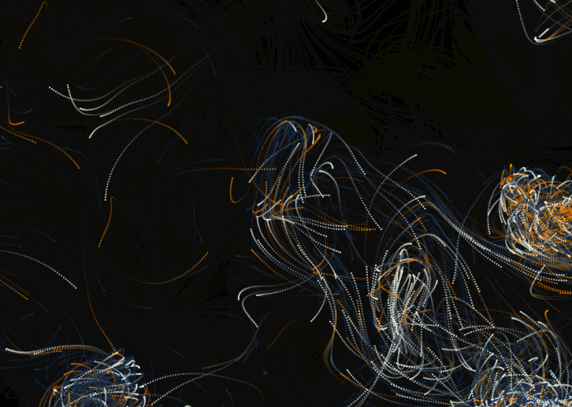
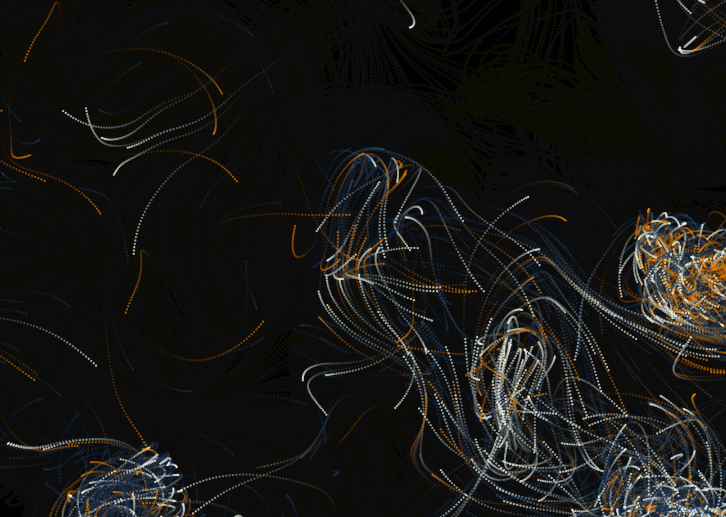

NTUA ARCH 4342 Computational Methods in Creative Arts and Sciences
MicroPulse
We are team 05 and we created this website to showcase our work in the subject of Computer Sciences 2025. Our main goal was to create an interactive "artwork" that is shaped by the user's musical input. Our inspiration was the generative art of Casey Reas. Much like his work, our project embraces unpredictability, structure, and fluidity all at once. In general, music is vital to the artwork we have created since we wanted to highlight the connection between art and music and how our brains react to that mix. The particles on the screen represent that idea since each one moves with purpose, like thoughts or emotions triggered by music.
We invite you to interact, experiment, and immerse yourself! Let your keyboard be the instrument! Let your imagination be the guide!


 
